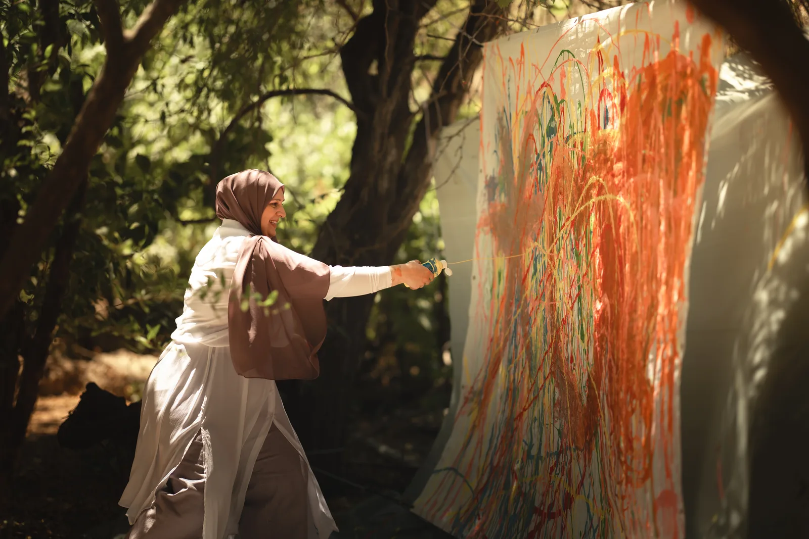

نبدأ بالسؤال، لا بالإجابة
لأنّ كل علامةٍ تبدأ من نقطة، ولأنّ هذه النقطة هي الأصعب في الإيجاد والأهم في البناء.
نحن لا نبدأ بالتصميم، بل نبدأ بالسؤال: من أنت؟ وماذا تريد أن تقول؟ من هذه الإجابة، تُبنى الهوية البصرية، وتُصاغ الصورة، ويُكتب النص، ويُصمَّم الموقع، كلٌّ في مكانه، وكلٌّ بخدمة الفكرة الواحدة.
لا نقدّم حلولاً جاهزة، لأنّ لا علامتين تتشابهان في نقطة بدايتهما. نصغي أولاً، ثم نبني.
كل علامةٍ تبدأ من نقطة، وهذه النقطة هي الأصعب في الإيجاد. لا نبدأ بالتصميم، بل بالسؤال: من أنت؟ وماذا تريد أن تقول؟ من الإجابة، تُبنى الهويّة، وتُصاغ الصورة، ويُكتب النص. لا حلول جاهزة: لا علامتين تتشابهان في نقطة بدايتهما.
